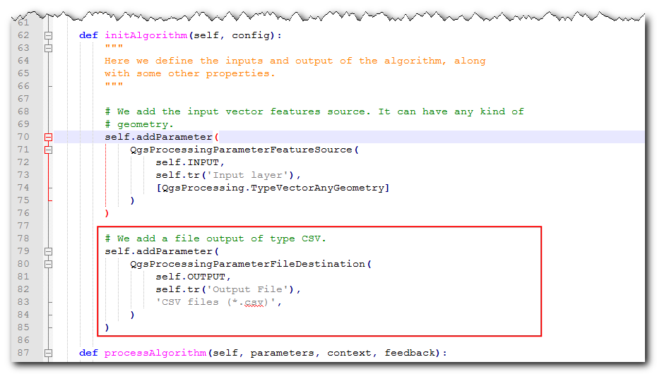

Construyendo un Complemento de Procesamiento (QGIS3)¶
En el tutorial previo Construyendo un Complemento Python (QGIS3), aprendió cómo crear un complemento python - incluyendo el interfaz de usuario y lógica personalizada para procesar los datos. Mientras este tipo de complemento es útil, dejan la carga de diseñar el interfaz de usuario en el autor del complemento. Esto resulta en que cada complemento tiene diferentes maneras para interactuar con él - lo que es confuso para los usuarios. También, los complementos regulares no interactúan con otras partes de QGIS. Por ejemplo, no puedes usar la funcionalidad del complemento para otro algoritmo. Si el complemento que quieres escribir es principalmente para análisis, y la interacción del usuario que quieres es limitada a permitir que el usuario elija entradas y salidas, hay una manera más fácil y preferida para escribir complementos usando el Marco de Procesamiento. Elimina la necesidad de que diseñes el interfaz de usuario - simplificando el proceso. La biblioteca incorporada de procesamiento crea una interfaz estándar de procesamiento que dependen de tus entradas que lucen y se comportan como cualquier otro algoritmo de procesamiento en QGIS. También se integra perfectamente con el resto del marco Procesamiento - con lo que tus algoritmos de complemento pueden ser usados en procesamiento por lotes, modelador gráfico, llamado desde la consola de python, etc.
Vista general de la tarea¶
Reimplementaremos un complemento simple del tutorial Construyendo un Complemento Python (QGIS3) como un complemento de procesamiento. Resultará en un nuevo proveedor de procesamiento llamado Guardar Atributos y un algoritmo Guardar Atributos como CSV que permitirá a los usuarios elegir una capa vector y escribir sus atributos como un archivo CSV.
Obtener las Herramientas¶
Un Editor de Texto o un IDE Python.¶
Cualquier tipo de desarrollo de software requiere un buen editor de texto. Si ya tiene un editor de texto favorito o un IDE (Ambiente Integrado de Desarrollo, en inglés), puede usarlo para este tutorial. De otra forma, cada plataforma ofrece una amplia variedad de opciones gratuitas o pagadas para editores de texto. Elija aquel que se ajuste a sus necesidades.
Este tutorial usa el editor Notepad++ en Windows.
Windows
Notepad++ es un buen editor gratuito para windows. Descargue e instale el editor Notepad++.
Nota
Si está usando Notepad++, asegúrese de ir a y active Reemplazar por espacio. Python es muy sensible al espacio en blanco y esta configuración asegurará que las tabulaciones y espacios sean tratadas apropiadamente.
Complemento Plugin Builder¶
Hay un complemento útil QGIS llamado Plugin Builder que crea todos los archivos necesarios y el código repetitivo para un complemento. Encuentre e instale el complemento Plugin Builder. Vea Uso de Complementos para más detalles de cómo instalar complementos.
Complemento Plugins Reloader¶
Este es otro complemento asistente que permite el desarrollo iterativo de complementos. Usando este complemento, puede cambiar el código del complemento y tenerlo reflejado en QGIS sin tener que reiniciar QGIS cada vez. Encuentre e instale el complemento Plugin Reloader. Vea Uso de Complementos para más detalles sobre como instalar complementos.
Nota
Plugin Reloader es un complemento experimental. Asegúrese que ha marcado Mostrar también complementos experimentales en la configuración Administrador de Complementos si no puede encontrarlo.
Procedimiento¶
Abra QGIS. Vaya a .

Verá el diálogo QGIS Plugin Builder con un formulario. Puede llenar el formulario con detalles relacionados a nuestro complemento. El Nombre de clase será el nombre de la Clase Python que contiene la lógica del complemento. Éste también será el nombre de la carpeta que contiene todos los archivos de complementos. Ingrese
SaveAttributescomo el nombre de la clase. El Nombre de complemento es el nombre bajo el que aparecerá el complemento en el Administrador de Complemento. Ingrese el nombre comoGuardar Attributos (Procesamiento). Agregue una descripción en el campo Descripción. El Nombre del módulo será el nombre del archivo python principal para el complemento. Ingréselo comosave_attributes_processing. Deje los números de versión como están e ingrese su nombre y dirección electrónica en los campos apropiados. Clic en Siguiente.

Ingrese una breve descripción del complemento para el diálogo Acerca y clic en Siguiente.

Seleccione el
Proveedor de Procesamientodel selector Plantilla. El valor Nombre de algoritmo será como encontrarán los usuarios el algoritmo de procesamiento en la Caja de Herramientas Procesos. Ingréselo comoGuardar Atributos como CSV. Deje Grupo de algoritmo en blanco. Ingrese el Nombre de proveedor comoGuardar Atributos. Ingrese una descripción en el campo Descripción de proveedor. Clic en Siguiente.

Plugin Builder le pedirá el tipo de archivos a generar. Mantenga la selección predeterminada y clic en Siguiente.

Como no tenemos previsto publicar el complemento, puede dejar Rastreador de errores, Repositorio y Página de inicio en sus valores predeterminados. Marque la caja Señale el complemento como experimental abajo y clic en Siguiente.

Se le pedirá escoger un directorio para su complemento. Por ahora, guárdelo a un directorio que pueda encontrar fácilmente en su computadora y clic en Generar.

A continuación, presione el botón generar. Verá un diálogo de confirmación una vez que la plantilla de complemento sea creada.

Nota
Puede que vea un aviso que dice que no se encontró pyrcc5 en su ruta. Puede ignorar este mensaje.
Los complemento en QGIS son almacenados en una carpeta especial. Debemos copiar nuestro directorio de complemento a esa carpeta antes que podamos usarlo. En QGIS, localice la carpeta de su perfil actual yendo a .

En la carpeta del perfil, copie la carpeta del complemento a la subcarpeta

Ahora estamos listos para darle una primera mirada al complemento nuevo que creamos. Cierre QGIS e inícielo de nuevo. Vaya a y active el complemento
Guardar Atributos (Proceso)en la pestaña Instalado.

Vaya a . Notará que hay un nuevo proveedor, abajo, llamado
Guardar Atributos. Expándalo para encontrar un algoritmo llamadoGuardar Atributos como CSV. Doble-clic para iniciarlo.

Notará un diálogo familiar de algoritmo de procesamiento con un menú desplegable para una capa de entrada y un selector para una capa de salida. Ahora personalizaremos este diálogo para ajustarlo a nuestras necesidades. Cierre este diálogo.

Vaya al directorio del complemento y cargue el archivo
save_attributes_processing_algorithm.pyen un editor de texto. Para nuestro complemento, tomaremos una capa vectorial como una entrada y escribiremos un archivo CSV como salida. Entonces, en vez de importarQgsProcessingParameterFeatureSinkcomo salida - que es para capa vectorial - agregueQgsProcessingParameterFileDestinationque es para un archivo.from qgis.core import (QgsProcessing, QgsFeatureSink, QgsProcessingAlgorithm, QgsProcessingParameterFeatureSource, QgsProcessingParameterFileDestination)
A continuación, deslice hacia abajo y defina el parámetro de salida bajo el método
initAlgorithm()con el siguiente código.self.addParameter( QgsProcessingParameterFileDestination( self.OUTPUT, self.tr('Output File'), 'CSV files (*.csv)', ) )

Volvamos a cargar nuestro complemento de manera que podamos ver los cambios en la ventana de diálogo. Vaya a . Seleccione
save_attributes_processingen el diálogo Configurar Plugin reloader.

Clic en el botón Reload plugin para cargar la versión más reciente del complemento. Para probar esta funcionalidad, debemos cargar algunas capas en QGIS. Después de que ha cargado algunas capas, inicie el algoritmo . Verá que la salida es cambiada a un archivo en vez de una capa.

Agreguemos alguna lógica al algoritmo que toma la capa vectorial seleccionada y escribe los atributos a un archivo CSV. La explicación para este código puede encontrarse en Iniciándote con la Programación Python (QGIS3). Una diferencia notable aquí es el contador que ayuda a mostrar el progreso del procesamiento. Agregue el código siguiente al método
processAlgorithmy guarde el archivo.def processAlgorithm(self, parameters, context, feedback): """ Here is where the processing itself takes place. """ source = self.parameterAsSource(parameters, self.INPUT, context) csv = self.parameterAsFileOutput(parameters, self.OUTPUT, context) fieldnames = [field.name() for field in source.fields()] # Compute the number of steps to display within the progress bar and # get features from source total = 100.0 / source.featureCount() if source.featureCount() else 0 features = source.getFeatures() with open(csv, 'w') as output_file: # write header line = ','.join(name for name in fieldnames) + '\n' output_file.write(line) for current, f in enumerate(features): # Stop the algorithm if cancel button has been clicked if feedback.isCanceled(): break # Add a feature in the sink line = ','.join(str(f[name]) for name in fieldnames) + '\n' output_file.write(line) # Update the progress bar feedback.setProgress(int(current * total)) return {self.OUTPUT: csv}

De vuelta en la ventana principal de QGIS, cargue de nuevo el complemento haciendo clic en el botón Reload plugin. Inicie el algoritmo . Seleccione una capa par la Capa de entrada. A continuación, clic en el botón … junto a Archivo de salida.

Dele el nombre
test.csva su archivo de salida y clic en Ejecutar. El algoritmo se ejecutará y producirá un archivo CSV en la ubicación elegida.

Como se mencionó antes, a pesar de que este algoritmo viene como un complemento, se integra muy bien con las herramientas de procesamiento incorporadas. Para demostrar esto, ejecutemos este algoritmo usando el interfaz de procesamiento por lotes incorporado. Clic-derecho en el algoritmo y seleccione Ejecutar como Proceso por Lotes...

Puede seleccionar múltiples entradas y ejecutar este algoritmo en un lote para producir múltiples archivos CSV en una sola corrida. Si no está familiarizado con el interfaz de procesamiento por lotes, vea Procesamiento por Lotes usando el Marco de Procesamiento (QGIS3) para instrucciones paso a paso.

El complemento está listo y puede enviarlo en su forma actual. Pero podemos mejorar la experiencia de usuario haciendo que el complemento de procesamiento se comporte como un complemento regular. Usando el enfoque híbrido bosquejado abajo, usted puede agregar un elemento de menú y un botón de barra de herramienta. De esta manera, le da a los usuarios una manera más fácil para descubrir e iniciar las herramientas que están instaladas como parte del complemento. Necesitaremos un icono para el complemento. Descargue logo.png y cópielo al directorio de complemento.

Abra el archivo
save_attributes_processing.py. Agregue la siguiente importación en el tope del archivo.from qgis.PyQt.QtWidgets import QAction from qgis.PyQt.QtGui import QIcon from qgis.core import QgsProcessingAlgorithm, QgsApplication import processing
Deslice hacia abajo y modifique el método
__init__()para inicializar iface.def __init__(self, iface): self.provider = None self.iface = iface
Deslice más hacia abajo y localice el método
initGui. Sólo contiene el código para inicializar el proveedor de procesamiento. Agregaremos el código para agregar un botón de barra de herramientas y un elemento de menú. También necesitaremos agregar código al métodounload, para eliminar estos elementos cuando se quite el complemento.def initGui(self): self.initProcessing() icon = os.path.join(os.path.join(cmd_folder, 'logo.png')) self.action = QAction( QIcon(icon), u"Save Attributes as CSV", self.iface.mainWindow()) self.action.triggered.connect(self.run) self.iface.addPluginToMenu(u"&SaveAttributes", self.action) self.iface.addToolBarIcon(self.action) def unload(self): QgsApplication.processingRegistry().removeProvider(self.provider) self.iface.removePluginMenu(u"&SaveAttributes", self.action) self.iface.removeToolBarIcon(self.action)
Tenemos conectados el botón y el elemento de menú para gatillar el método
runcuando se haga clic. Agregue un nuevo método en la parte de abajo que use el método auxiliarexecAlgorithmDialogopara inicia el algoritmo de procesamiento.def run(self): processing.execAlgorithmDialog("Save Attributes:Save Attributes as CSV")


A continuación, necesitamos una arreglo menor al archivo
__init__.pyen el directorio del complemento. Abra el archivo y agregueifacea la instrucción de retorno, de manera que la referencia al interfaz de QGIS sea pasada al complemento.

De vuelta en la ventana principal QGIS, recargue el complemento haciendo clic en el botón Recargar complemento. Verá un nuevo icono de barra de herramienta y un elemento de menú bajo . Puede hacer clic en estos para iniciar el algoritmo
Guardar Atributos como CSV. Notará que el proveedor de procesamiento y el algoritmo en la barra de herramientas todavía tienen los iconos predeterminados. Arreglemos eso.

Abra el archivo
save_attributes_processing_provider.pydel directorio de complemento. Agregue las importaciones a la parte superior como está a continuación.import os import inspect from qgis.PyQt.QtGui import QIcon
Modifique el método
iconcomo sigue para agregar el icono personalizado.def icon(self): cmd_folder = os.path.split(inspect.getfile(inspect.currentframe()))[0] icon = QIcon(os.path.join(os.path.join(cmd_folder, 'logo.png'))) return icon


A continuación, abra el archivo
save_attributes_processing_algorithm.py. Agregue la importación en la parte de arriba como sigue.import os import inspect from qgis.PyQt.QtGui import QIcon
Agregue un nuevo método
iconocon el siguiente código.def icon(self): cmd_folder = os.path.split(inspect.getfile(inspect.currentframe()))[0] icon = QIcon(os.path.join(os.path.join(cmd_folder, 'logo.png'))) return icon


Recargue el complemento y verá que tanto el proveedor como el algoritmo tienen nuestro icono personalizado.

{kind=link}
Puede comprimir el directorio del complemento y compartirlo con sus usuarios. Ellos pueden descomprimir el contenido a su directorio de complemento y probar su complemento. Si éste fuera un complemento real, usted lo actualizaría al Repositorio de Complementos QGIS para que todos los usuarios QGIS sean capaces de encontrar y descargar su complemento.
Nota
Este complemento es sólo para fines de demonstración. No publique este complemento ni lo suba al repositorio de complementos de QGIS.
Abajo tiene el archivo fuente completo como referencia.
__init__.py
# -*- coding: utf-8 -*-
"""
/***************************************************************************
SaveAttributes
A QGIS plugin
This plugin adds an algorithm to save attributes of selected layer as a CSV file
Generated by Plugin Builder: http://g-sherman.github.io/Qgis-Plugin-Builder/
-------------------
begin : 2019-09-18
copyright : (C) 2019 by Ujaval Gandhi
email : ujaval@spatialthoughts.com
***************************************************************************/
/***************************************************************************
* *
* This program is free software; you can redistribute it and/or modify *
* it under the terms of the GNU General Public License as published by *
* the Free Software Foundation; either version 2 of the License, or *
* (at your option) any later version. *
* *
***************************************************************************/
This script initializes the plugin, making it known to QGIS.
"""
__author__ = 'Ujaval Gandhi'
__date__ = '2019-09-18'
__copyright__ = '(C) 2019 by Ujaval Gandhi'
# noinspection PyPep8Naming
def classFactory(iface): # pylint: disable=invalid-name
"""Load SaveAttributes class from file SaveAttributes.
:param iface: A QGIS interface instance.
:type iface: QgsInterface
"""
#
from .save_attributes_processing import SaveAttributesPlugin
return SaveAttributesPlugin(iface)
save_attributes_processing.py
# -*- coding: utf-8 -*-
"""
/***************************************************************************
SaveAttributes
A QGIS plugin
This plugin adds an algorithm to save attributes of selected layer as a CSV file
Generated by Plugin Builder: http://g-sherman.github.io/Qgis-Plugin-Builder/
-------------------
begin : 2019-09-18
copyright : (C) 2019 by Ujaval Gandhi
email : ujaval@spatialthoughts.com
***************************************************************************/
/***************************************************************************
* *
* This program is free software; you can redistribute it and/or modify *
* it under the terms of the GNU General Public License as published by *
* the Free Software Foundation; either version 2 of the License, or *
* (at your option) any later version. *
* *
***************************************************************************/
"""
__author__ = 'Ujaval Gandhi'
__date__ = '2019-09-18'
__copyright__ = '(C) 2019 by Ujaval Gandhi'
# This will get replaced with a git SHA1 when you do a git archive
__revision__ = '$Format:%H$'
import os
import sys
import inspect
from qgis.PyQt.QtWidgets import QAction
from qgis.PyQt.QtGui import QIcon
from qgis.core import QgsProcessingAlgorithm, QgsApplication
import processing
from .save_attributes_processing_provider import SaveAttributesProvider
cmd_folder = os.path.split(inspect.getfile(inspect.currentframe()))[0]
if cmd_folder not in sys.path:
sys.path.insert(0, cmd_folder)
class SaveAttributesPlugin(object):
def __init__(self, iface):
self.provider = None
self.iface = iface
def initProcessing(self):
"""Init Processing provider for QGIS >= 3.8."""
self.provider = SaveAttributesProvider()
QgsApplication.processingRegistry().addProvider(self.provider)
def initGui(self):
self.initProcessing()
icon = os.path.join(os.path.join(cmd_folder, 'logo.png'))
self.action = QAction(
QIcon(icon),
u"Save Attributes as CSV", self.iface.mainWindow())
self.action.triggered.connect(self.run)
self.iface.addPluginToMenu(u"&SaveAttributes", self.action)
self.iface.addToolBarIcon(self.action)
def unload(self):
QgsApplication.processingRegistry().removeProvider(self.provider)
self.iface.removePluginMenu(u"&SaveAttributes", self.action)
self.iface.removeToolBarIcon(self.action)
def run(self):
processing.execAlgorithmDialog("Save Attributes:Save Attributes as CSV")
save_attributes_processing_algorithm.py
# -*- coding: utf-8 -*-
"""
/***************************************************************************
SaveAttributes
A QGIS plugin
This plugin adds an algorithm to save attributes of selected layer as a CSV file
Generated by Plugin Builder: http://g-sherman.github.io/Qgis-Plugin-Builder/
-------------------
begin : 2019-09-18
copyright : (C) 2019 by Ujaval Gandhi
email : ujaval@spatialthoughts.com
***************************************************************************/
/***************************************************************************
* *
* This program is free software; you can redistribute it and/or modify *
* it under the terms of the GNU General Public License as published by *
* the Free Software Foundation; either version 2 of the License, or *
* (at your option) any later version. *
* *
***************************************************************************/
"""
__author__ = 'Ujaval Gandhi'
__date__ = '2019-09-18'
__copyright__ = '(C) 2019 by Ujaval Gandhi'
# This will get replaced with a git SHA1 when you do a git archive
__revision__ = '$Format:%H$'
import os
import inspect
from qgis.PyQt.QtGui import QIcon
from qgis.PyQt.QtCore import QCoreApplication
from qgis.core import (QgsProcessing,
QgsFeatureSink,
QgsProcessingAlgorithm,
QgsProcessingParameterFeatureSource,
QgsProcessingParameterFileDestination)
class SaveAttributesAlgorithm(QgsProcessingAlgorithm):
"""
This is an example algorithm that takes a vector layer and
creates a new identical one.
It is meant to be used as an example of how to create your own
algorithms and explain methods and variables used to do it. An
algorithm like this will be available in all elements, and there
is not need for additional work.
All Processing algorithms should extend the QgsProcessingAlgorithm
class.
"""
# Constants used to refer to parameters and outputs. They will be
# used when calling the algorithm from another algorithm, or when
# calling from the QGIS console.
OUTPUT = 'OUTPUT'
INPUT = 'INPUT'
def initAlgorithm(self, config):
"""
Here we define the inputs and output of the algorithm, along
with some other properties.
"""
# We add the input vector features source. It can have any kind of
# geometry.
self.addParameter(
QgsProcessingParameterFeatureSource(
self.INPUT,
self.tr('Input layer'),
[QgsProcessing.TypeVectorAnyGeometry]
)
)
# We add a file output of type CSV.
self.addParameter(
QgsProcessingParameterFileDestination(
self.OUTPUT,
self.tr('Output File'),
'CSV files (*.csv)',
)
)
def processAlgorithm(self, parameters, context, feedback):
"""
Here is where the processing itself takes place.
"""
source = self.parameterAsSource(parameters, self.INPUT, context)
csv = self.parameterAsFileOutput(parameters, self.OUTPUT, context)
fieldnames = [field.name() for field in source.fields()]
# Compute the number of steps to display within the progress bar and
# get features from source
total = 100.0 / source.featureCount() if source.featureCount() else 0
features = source.getFeatures()
with open(csv, 'w') as output_file:
# write header
line = ','.join(name for name in fieldnames) + '\n'
output_file.write(line)
for current, f in enumerate(features):
# Stop the algorithm if cancel button has been clicked
if feedback.isCanceled():
break
# Add a feature in the sink
line = ','.join(str(f[name]) for name in fieldnames) + '\n'
output_file.write(line)
# Update the progress bar
feedback.setProgress(int(current * total))
return {self.OUTPUT: csv}
def name(self):
"""
Returns the algorithm name, used for identifying the algorithm. This
string should be fixed for the algorithm, and must not be localised.
The name should be unique within each provider. Names should contain
lowercase alphanumeric characters only and no spaces or other
formatting characters.
"""
return 'Save Attributes as CSV'
def displayName(self):
"""
Returns the translated algorithm name, which should be used for any
user-visible display of the algorithm name.
"""
return self.tr(self.name())
def group(self):
"""
Returns the name of the group this algorithm belongs to. This string
should be localised.
"""
return self.tr(self.groupId())
def groupId(self):
"""
Returns the unique ID of the group this algorithm belongs to. This
string should be fixed for the algorithm, and must not be localised.
The group id should be unique within each provider. Group id should
contain lowercase alphanumeric characters only and no spaces or other
formatting characters.
"""
return ''
def tr(self, string):
return QCoreApplication.translate('Processing', string)
def icon(self):
"""
Should return a QIcon which is used for your provider inside
the Processing toolbox.
"""
cmd_folder = os.path.split(inspect.getfile(inspect.currentframe()))[0]
icon = QIcon(os.path.join(os.path.join(cmd_folder, 'logo.png')))
return icon
def createInstance(self):
return SaveAttributesAlgorithm()
save_attributes_processing_provider.py
# -*- coding: utf-8 -*-
"""
/***************************************************************************
SaveAttributes
A QGIS plugin
This plugin adds an algorithm to save attributes of selected layer as a CSV file
Generated by Plugin Builder: http://g-sherman.github.io/Qgis-Plugin-Builder/
-------------------
begin : 2019-09-18
copyright : (C) 2019 by Ujaval Gandhi
email : ujaval@spatialthoughts.com
***************************************************************************/
/***************************************************************************
* *
* This program is free software; you can redistribute it and/or modify *
* it under the terms of the GNU General Public License as published by *
* the Free Software Foundation; either version 2 of the License, or *
* (at your option) any later version. *
* *
***************************************************************************/
"""
__author__ = 'Ujaval Gandhi'
__date__ = '2019-09-18'
__copyright__ = '(C) 2019 by Ujaval Gandhi'
# This will get replaced with a git SHA1 when you do a git archive
__revision__ = '$Format:%H$'
import os
import inspect
from qgis.PyQt.QtGui import QIcon
from qgis.core import QgsProcessingProvider
from .save_attributes_processing_algorithm import SaveAttributesAlgorithm
class SaveAttributesProvider(QgsProcessingProvider):
def __init__(self):
"""
Default constructor.
"""
QgsProcessingProvider.__init__(self)
def unload(self):
"""
Unloads the provider. Any tear-down steps required by the provider
should be implemented here.
"""
pass
def loadAlgorithms(self):
"""
Loads all algorithms belonging to this provider.
"""
self.addAlgorithm(SaveAttributesAlgorithm())
# add additional algorithms here
# self.addAlgorithm(MyOtherAlgorithm())
def id(self):
"""
Returns the unique provider id, used for identifying the provider. This
string should be a unique, short, character only string, eg "qgis" or
"gdal". This string should not be localised.
"""
return 'Save Attributes'
def name(self):
"""
Returns the provider name, which is used to describe the provider
within the GUI.
This string should be short (e.g. "Lastools") and localised.
"""
return self.tr('Save Attributes')
def icon(self):
"""
Should return a QIcon which is used for your provider inside
the Processing toolbox.
"""
cmd_folder = os.path.split(inspect.getfile(inspect.currentframe()))[0]
icon = QIcon(os.path.join(os.path.join(cmd_folder, 'logo.png')))
return icon
def longName(self):
"""
Returns the a longer version of the provider name, which can include
extra details such as version numbers. E.g. "Lastools LIDAR tools
(version 2.2.1)". This string should be localised. The default
implementation returns the same string as name().
"""
return self.name()